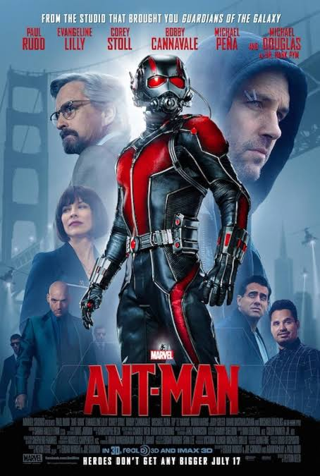

antman

שנה: 2015
ז'אנר: פעולה, מדע בדיוני, הרפתקאות, קומדיה וגיבורי-על
שחקנים: פול ראד, מייקל דאגלס, אוונג'לין לילי, קורי סטול, מייקל פניה, ג'ודי גריר ואבי ריידר פורטסון.
תקציר הסרט: סקוט לאנג, פורץ לשעבר שמנסה לפתוח דף חדש בחייו, מקבל הזדמנות יוצאת דופן כאשר המדען האנק פים מגייס אותו למשימה סודית והופך אותו לגיבור-על בשם אנטמן, בעל חליפה מיוחדת המאפשרת לו להקטין את גודלו ולשמור על כוחו. סקוט נדרש ללמוד לשלוט ביכולותיו, להתמודד עם אויב מסוכן ולמנוע מנשק טכנולוגי מתקדם ליפול לידיים הלא נכונות, תוך שילוב של אקשן, הומור והרפתקאות.